Roberto Baggio carrera 1982–2004 ·
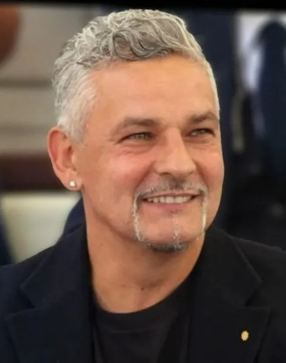

Roberto Baggio - Italia '90.jpg
Roberto Baggio - Lanerossi Vicenza.jpg
ROBERTO BAGGIO LANEROSSI VICENZA BIANCOROSSO.jpgRecuadro naranjo = foto actual. Para elegir, copia el nombre del archivo en "imagen_commons" del jugador.

Roberto Baggio - Italia '90.jpgRoberto Baggio - Lanerossi Vicenza.jpgROBERTO BAGGIO LANEROSSI VICENZA BIANCOROSSO.jpg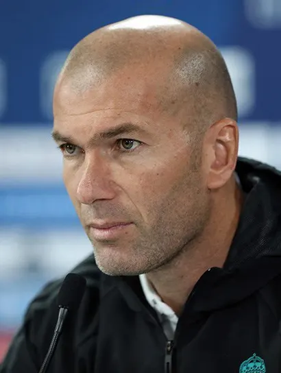

AllezZizou.jpg.jpg)
Le Mur de Zidane à Marseille (2002).jpg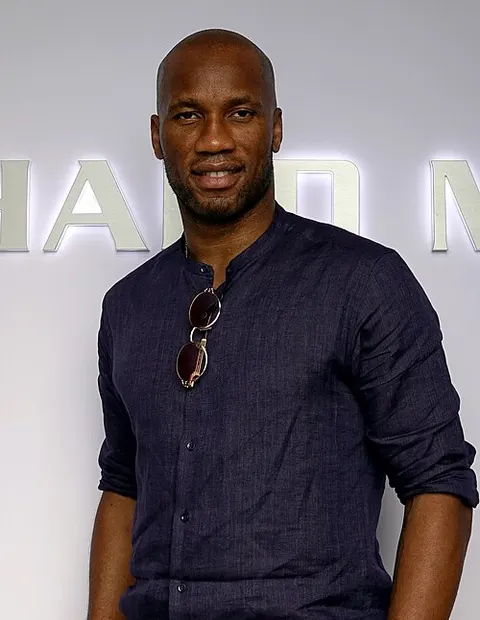

Drogba Weimann Kolo Toure 9253.JPG
Drogba Madrid.JPG
Sneijder & Drogba.JPG
Didier Drogba'13-14.JPG
John Terry Didier Drogba'14.JPG
Didier Drogba pose pour Airness.jpg
Tomas Sivok & Drogba.JPG
Didier Drogba 9279.JPG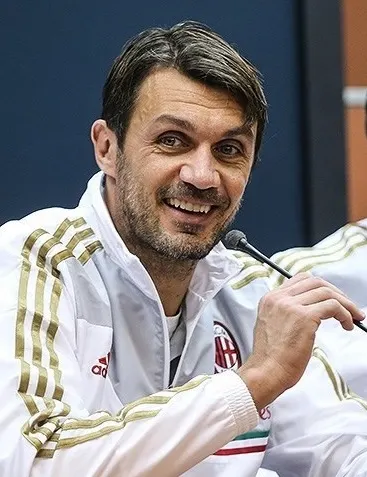

Maglia di paolo maldini indossata in italia 90, 01.JPG
Maglia di paolo maldini indossata in italia 90, 02.JPG
Maldini Italia.jpg
Football against poverty 2014 - Paolo Maldini.jpg
PaoloMaldini 2008.jpg
Paolo Maldini AC Milan Technical director 2018.jpg
Maldini2008.JPG
Paolo Maldini 2009.jpg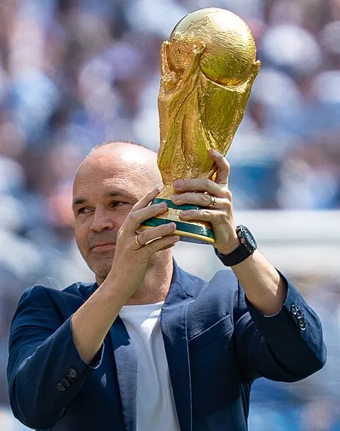

Bodegas Iniesta, en Fuentealbilla. Wikitakes La Manchuela 03.jpg
Bodegas Iniesta, en Fuentealbilla. Wikitakes La Manchuela 01.jpg
Bodegas Iniesta, en Fuentealbilla. Wikitakes La Manchuela 02.jpg
Bodegas Iniesta, en Fuentealbilla. Wikitakes La Manchuela 04.jpg
Bodegas Iniesta, en Fuentealbilla. Wikitakes La Manchuela 05.jpg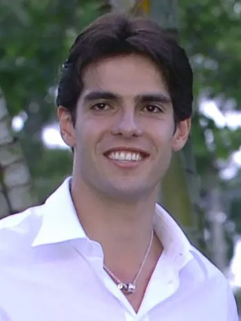

Adidas Kaká Track Top front.JPG
Adidas Kaká Track Top rear.JPG
Delgado and Kaka.png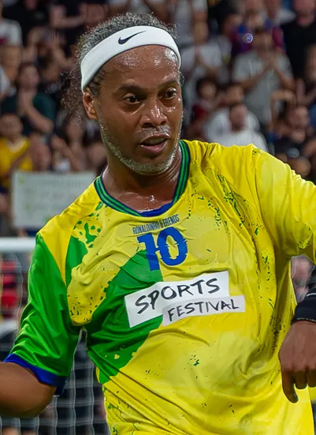

AlaimoRonaldinho.jpg
Ronaldinho Gaúcho soccer star.jpg
Rijkaard Ronaldinho.jpg
Ronaldinho With Sivamani.jpg.jpg)
Ronaldinho - Barcelona Sporting Club (24325445899).jpg
Milan gaúcho.jpg
Ronaldinho, Beckham, Kaka, Ancelotti.jpg
Ronaldo versus Ronaldinho – Real Madrid versus F.C. Barcelona.jpg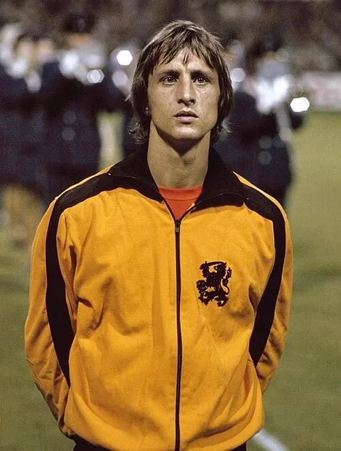

Document Cruyff.jpg
Levensgrote chocolade Johan Cruijff gemaakt door banketbakker in Sabat, Bestanddeelnr 927-1316.jpg
Johan Cruyff 1975.jpg
Cruyff panini card 1974.jpg
Cruyff figurita argentina.jpg
Cruyff panini 1973.jpg
Cruyff panini 1976.jpg
Cruyff barcelona card.jpg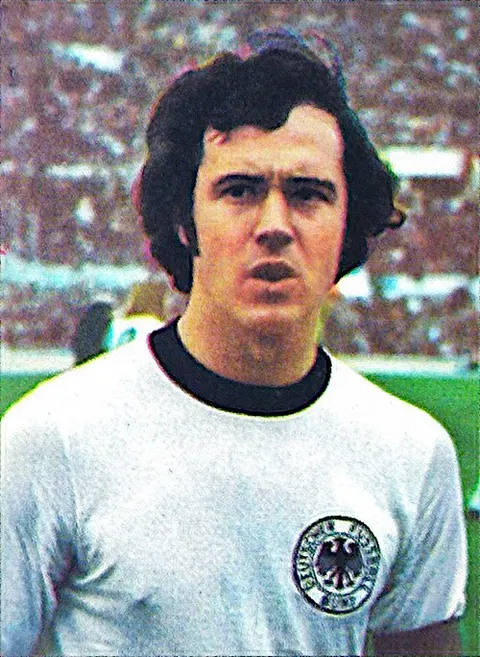

Franz Beckenbauer México 70.jpg_-_LABW_-_Staatsarchiv_Freiburg_W_140_Nr._00572.jpeg)
Freiburg im Breisgau- SC Freiburg gegen Hamburger SV (u.a. mit Franz Beckenbauer) - LABW - Staatsarchiv Freiburg W 140 Nr. 00572.jpeg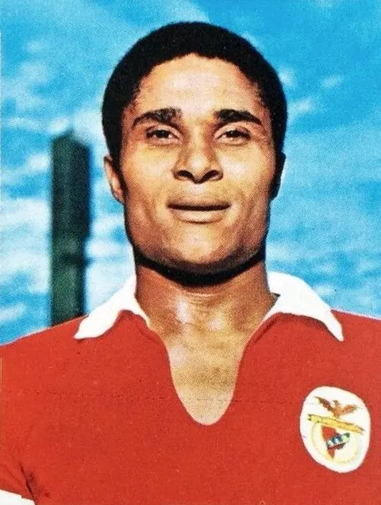

Benfica logeert in hotel Wageningse Berg te Wageningen. Eusébio, Bestanddeelnr 922-0873.jpg
Aankomst Benfica op Schiphol, Eusebio, Bestanddeelnr 925-5025.jpg
Eusébio 1972.jpg
Ajax tegen Benfica 2-1, Eusébio in actie, Bestanddeelnr 917-7451.jpg
Ajax tegen Benfica 2-1, Schrijvers in duel met Eusebio, Bestanddeelnr 917-7453.jpg
Eusebio1965.jpg
Benfica traint op bijvelden Feijenoord, Eusébio, Bestanddeelnr 915-0216.jpg
Benfica traint op bijvelden Feijenoord, Eusébio, Bestanddeelnr 915-0217.jpg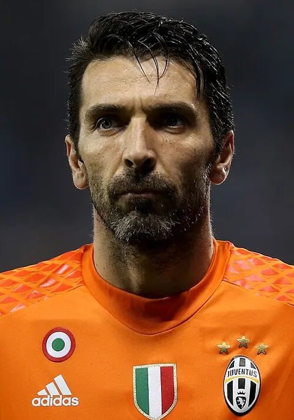
.jpg)
Juventus FC - 2010s - Buffon & BBC (Barzagli-Bonucci-Chiellini).jpg.jpg)
Cannavaro, Buffon, Italia-Paraguay 1998 (cropped).jpg
Gianluigi-Buffon.jpg
Cannavaro, Buffon, Italia-Paraguay 1998.jpg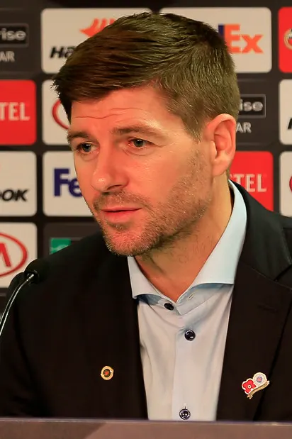

Steven Gerrard, 2014.jpg.jpg)
Steven Gerrard, 2014 (cropped).jpg
Steven Gerrard 2015.jpg
Steven Gerrard in 2014.jpg
Steven Gerrard on his testimonial.jpg
Gerrard in Boston.jpg
Steven Gerrard 2010.jpg.jpg)
Steven Gerrard in Thailand (12775079374).jpg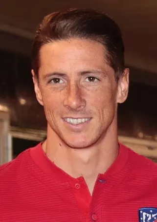
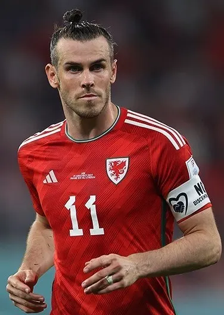
.jpg)
Gareth Bale 2015 (1).jpg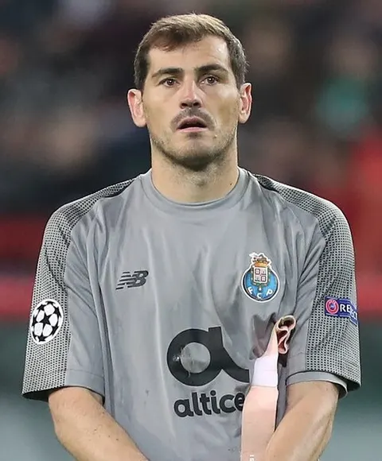

Spain - Chile - 10-09-2013 - Geneva - Iker Casillas.jpg
Spain - Chile - 10-09-2013 - Geneva - Iker Casillas 1.jpg.jpg)
Iker Casillas Eurocopa (cropped).jpg.jpg)
14-6-2011 Visita Iker Casillas (5833105973).jpg.jpg)
14-6-2011 Visita Iker Casillas (5833111835).jpg.jpg)
14-6-2011 Visita Iker Casillas (5833110817).jpg.jpg)
14-6-2011 Visita Iker Casillas (5833111427).jpg.jpg)
14-6-2011 Visita Iker Casillas (5833661120).jpg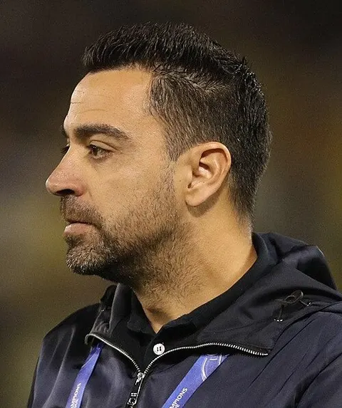
.jpg)
Wien02 Meiereistraße007 Stadion 2018-11-20 GuentherZ GD Xavi (20).jpg.jpg)
Wien02 Meiereistraße007 Stadion 2018-11-20 GuentherZ GD Xavi (19).jpg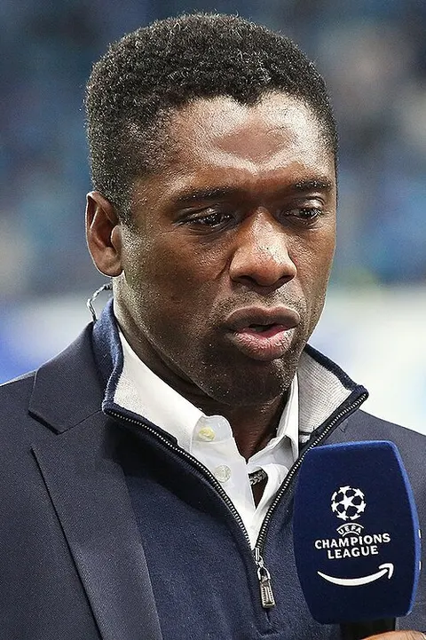

Clarence Seedorf Emirates Cup 2010.jpg.jpg)
Clarence Seedorf, Marco Yepes & Thomas Vermaelen (4866982475).jpg
Clarence Seedorf Chicago Fire-AC Milan 2010 02.jpg
Seedorf 4 wikicommons.jpg
Seedorf with Addo.jpg.jpg)
Clarence Seedorf 1 (4867567772).jpg.jpg)
Clarence Seedorf, Johan Djourou & Thomas Vermaelen (4867669744).jpg.jpg)
Mario Yepes, Marouane Chamakh & Clarence Seedorf (4867038697).jpg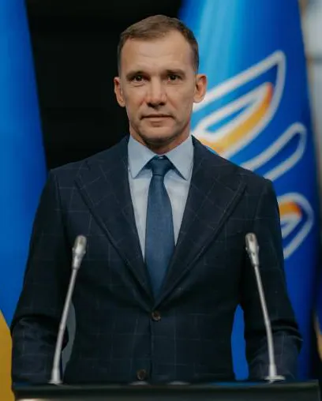

Sheva ritratto a matita.jpg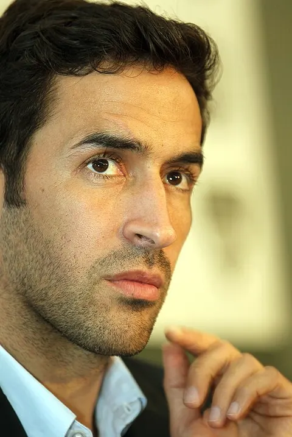

Raul 2011-08-03-2.jpg
Raul 2012-05-13-2.jpg
Raúl Al-Sadd signing 02.jpg
Raúl QSL Opening Ceremony 2012.jpg
Raúl Aspire4Sport Conference 2012.jpg
Raul Gonzalez 2012 2.jpg.jpg)
Raul 2011-08-03-2 (cropped).jpg
Raul Gonzalez 10mar2007.jpg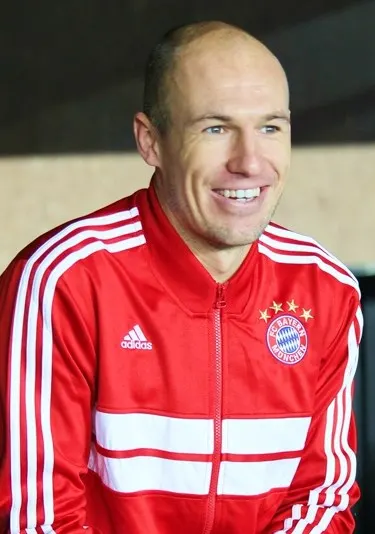

Robben Kuyt 2.jpg.jpg)
Robben Affelay (15487211285).jpg
Robben Sneijder.jpg
Arjen Robben Training 2016-11 FC Bayern Muenchen-10.jpg
Arjen Robben Training 2016-11 FC Bayern Muenchen-11.jpg
Arjen Robben Training 2016-11 FC Bayern Muenchen-12.jpg
Arjen Robben Training 2016-11 FC Bayern Muenchen-13.jpg
Arjen Robben Training 2016-11 FC Bayern Muenchen-14.jpg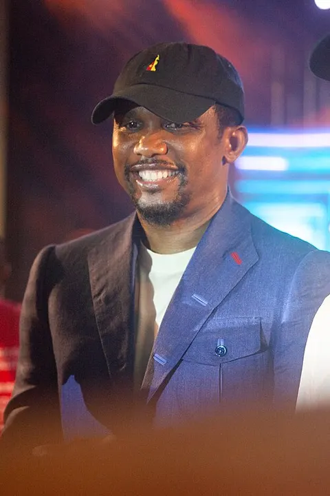
.jpg)
Samuel Eto'o - Inter Mailand (1).jpg.jpg)
Samuel Eto'o - Inter Mailand (5).jpg
Samuel Eto'o April 2014.jpg
Samuel Eto'o'14.JPG
Samuel 2011.jpg.jpg)
Samuel Eto'o (Inter).jpg
Samuel-Etoo-7-5-2006.jpg
Samuel Eto'o.jpg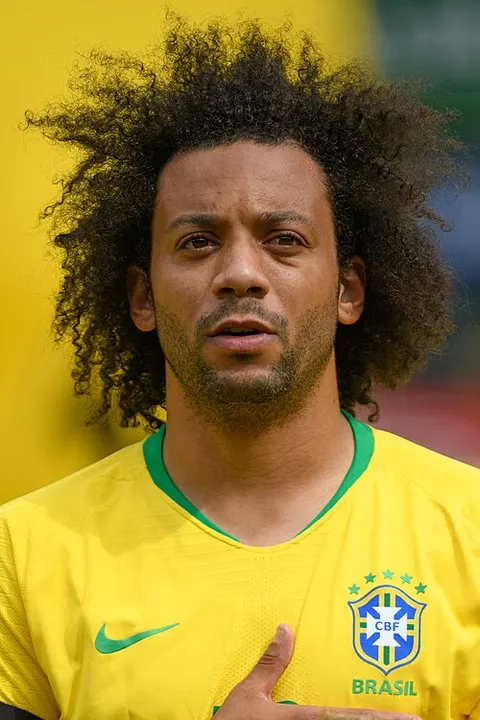

Marcelo Brazil.jpg
Marcelo by Tasnim.jpg
Marcelo Vieira 609.jpg
Marcelo Vieira 48609.jpg
Marcelo.jpg
Marcelo in 2009-10 Real Madrid.jpg
Marcelo El Clásico.jpg.jpg)
Marcelo (5013831269).jpg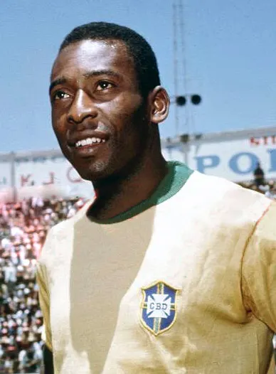

Pelé madurga.JPG_-_El_Gr%C3%A1fico_2228.jpg)
Pelé (Santos) - El Gráfico 2228.jpg_-Cosmos-_-_El_Gr%C3%A1fico_3026.jpg)
Pelé (Retiro) -Cosmos- - El Gráfico 3026.jpg
Karikatura Pele.jpg
Pelé cosmos.JPG
Pelé octubre 1958.JPG_y_Pel%C3%A9_(Santos)_-_El_Gr%C3%A1fico_2624.jpg)
Madurga (Boca) y Pelé (Santos) - El Gráfico 2624.jpg
Santos de Pelé - La Nación.jpg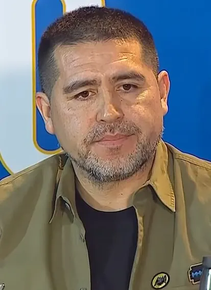

JR Riquelme.jpg
Juan Riquelme beim Audi Cup.jpg
Riquelme boca vs espanyol 2011.jpg
Argentina Brasil - Gol de Riquelme.jpg
Riquelme 2009.jpg
Roman viatri escalante.jpg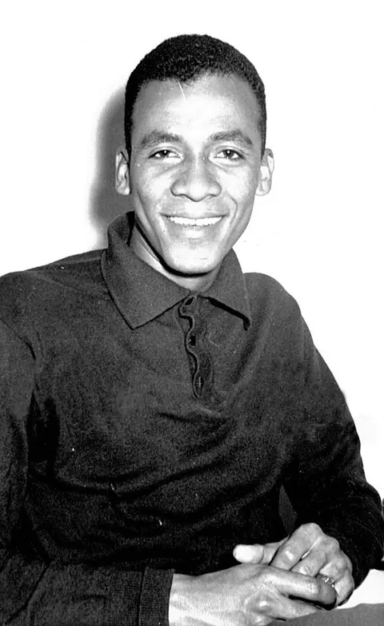

Aspencer1966.jpg
Spencer el grafico.jpg
Pele y Spencer.PNG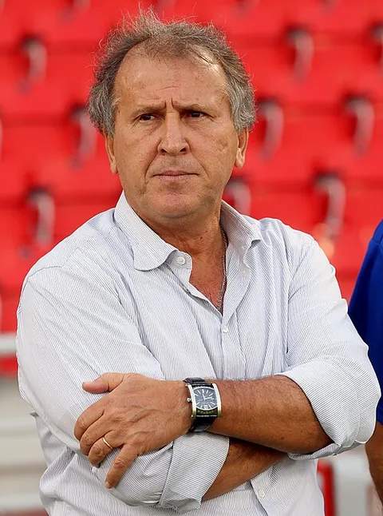

Zico panini card 79.jpg
Zico panini argentina78.jpg
Zico y maradona en argentina 1981.jpg
Coppa Italia 1983-84 - Triestina vs Udinese - Zico e Franco De Falco.jpg
Zico flamengo elgrafico.jpg
Zico maradona fillol.jpg
Zico y pele en flamengo 1979.jpg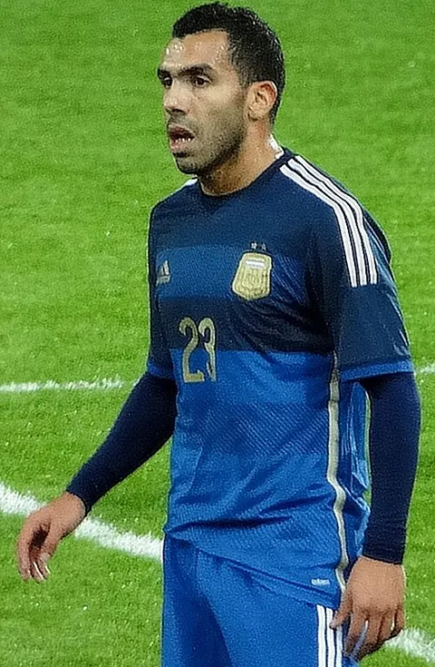

Cristiano Tevez Anderson.jpg
Carlitos Tevez at La Boca, Buenos Aires ARG.jpg
Carlos Tévez '10'.JPG
Carlos Tévez'13.JPG
Carlos Tévez - Argentina - 2010 FIFA World Cup.jpg.jpg)
Carlos Tevez, Supercoppa Italiana 2014 (cropped).jpg.jpg)
CarlosTevez (cropped).jpg
Carlos Tévez ManCity2.jpg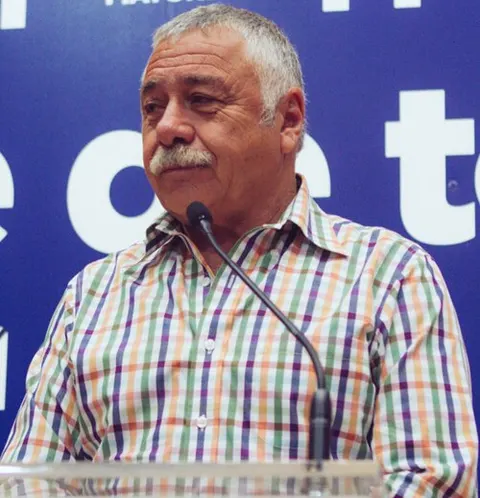

Carlos Caszely-1970.jpg
Llicència de jugador Carlos Caszely.png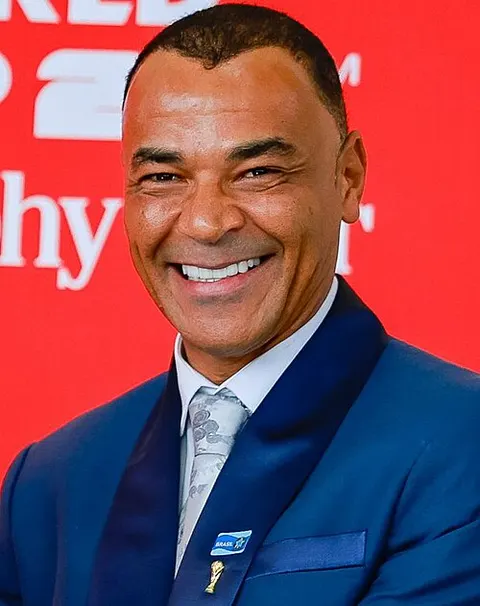
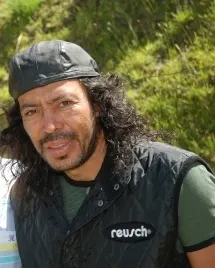
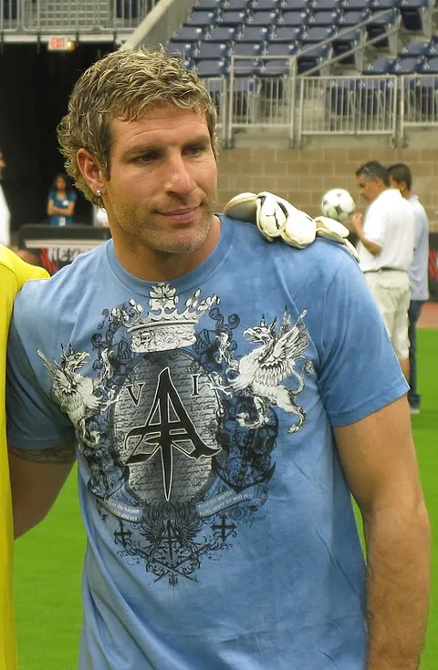

Martin palermo fkm08.jpg
Martín Palermo.jpg
Palermo - Estudiantes LP 1996.JPG
Palermo - Estudiantes LP 1997.JPG
Boca Juniores - Palermo y otros en la barrera - 4390368775.jpg
Martín Palermo contra Ghana.jpg
Palermo, personalidad destacada del deporte.jpg.jpg)
Boca Juniores - Palermo y otros en la barrera - 4390368775 (frag2).jpg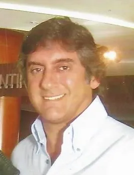
.jpg)
Enzo Francescoli 1984 (cropped).jpg
Elgrafico 3463 francescoli villazan.jpg
Elgrafico 3466 francescoli.jpg
Elgrafico libro43 francescoli.jpg
Elgrafico 3460 francescoli.jpg
Elgrafico 3462 francescoli.jpg
Elgrafico 3445 morresi francescoli.jpg
Elgrafico 3440 francescoli.jpg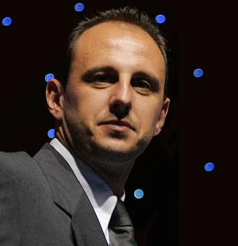

Rogério Ceni 2008.jpg
Rogério Ceni.jpg
Rogerio ceni.jpg
Lula and Rogério Ceni.jpg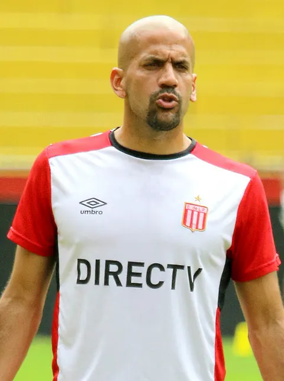

Verón Campeón Libertadores 09.jpg
Juan Sebastian Veron warming up.JPG
Juan Sebastian Veron 2009 FIFA CWC.JPG
Juan-Sebastián-Verón-EstudiantesLP-2013.JPG
Juan seba veron.JPG
Veron Corener.JPG
Juan Sebastian Veron & Roberto Rosetti 2009 FIFA CWC.JPG
Calderón-Verón-2006.jpg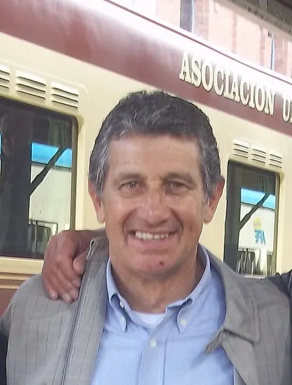
.jpg)
Fernando Morena (1974).jpg
Penarol morena tomando mate.jpg
Morena libertadorestrophy 1982.jpg
Morena boca.jpg
Penarol coquitorodriguez y morena.jpg
FernandoMorena1982 1.png
Penarol v cobreloa morena 1982.jpg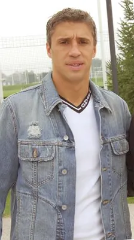

CrespoInter.jpg
Hernán Crespo - 07FEB2007 - Francia - presidencia-govar-bis.jpg
Hernán Crespo - 07FEB2007 - Francia - presidencia-govar.jpg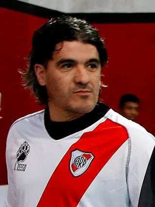

Ariel Ortega 1991.jpg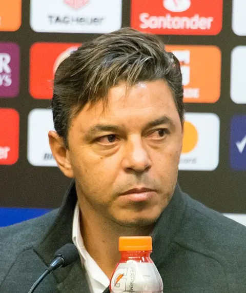
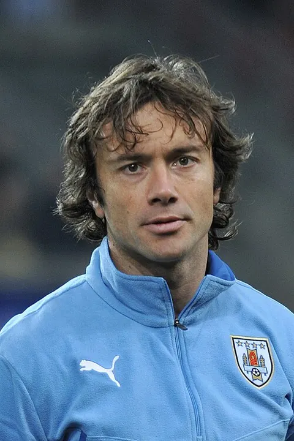
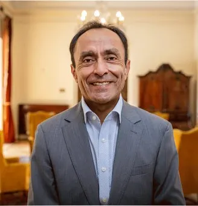
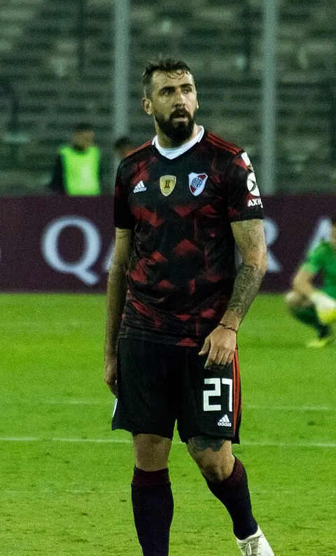

Pratto 2015 CAM.jpg_(cropped).jpg)
Lucas Pratto atuando pelo São Paulo em 2017 (35696694401) (cropped).jpg
Lucas Pratto 01.jpg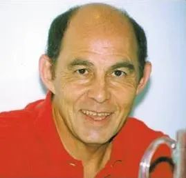

Independiente v boca bochini v vazquez 1984.jpg_-_El_Gr%C3%A1fico_2866.jpg)
Bochini (Independiente) - El Gráfico 2866.jpg
Bochini maradona coliseum.jpg
Bochini dominada.jpg
Ricardo Bochini.jpg
Bochini 1986 El Gráfico.jpg
Bochini figurita crack.jpg
Burruchaga trossero bochini copa.jpg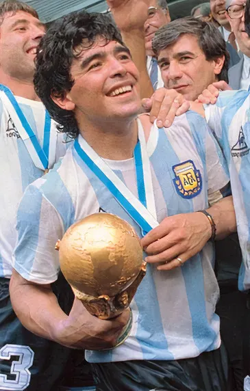

El grafico 3481 maradona.jpg
Elgrafico 3486 maradona.jpg
Elgrafico maradona el mas grande.jpg
Diego Maradona on 29 June 1986.jpg
El grafico 3482 maradona copa mundo.jpg
El grafico 3479 maradona.jpg
Elgrafico ed44 maradona.jpg
Maradona figurita fulbito.jpg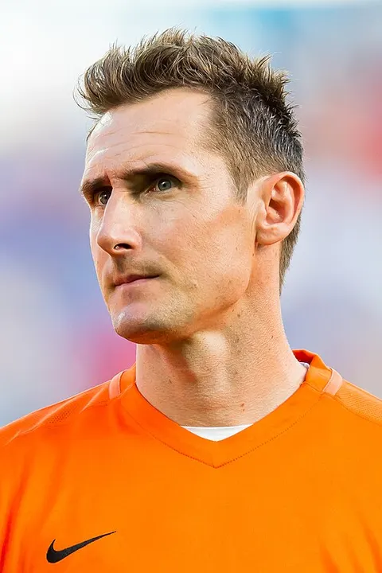

Miroslav Klose, Porträt.jpg
Gdansk PGE Arena GER-GRE Euro 2012 09 Klose Makos.jpg
Toni und Klose.jpg.JPG)
Borowski Klose (cropped).JPG
Miroslav Klose 2014.jpg
Miroslav Klose.jpg
Miroslav Klose 5dec2006.jpg
Miroslav Klose BMK.jpg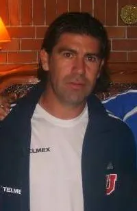
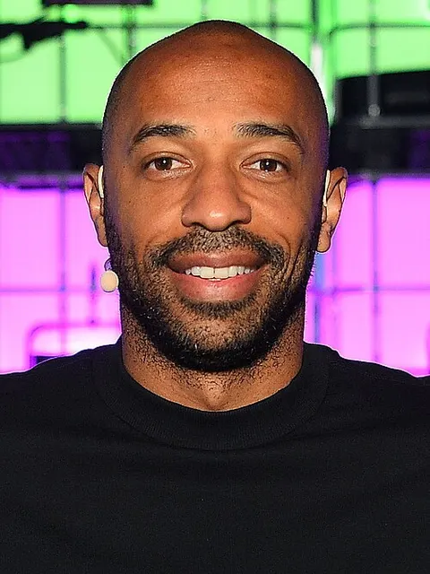
.jpg)
Henry (32892987316).jpg_(2).jpg)
Thierry Henry in Korea (2007) (2).jpg_(3).jpg)
Thierry Henry in Korea (2007) (3).jpg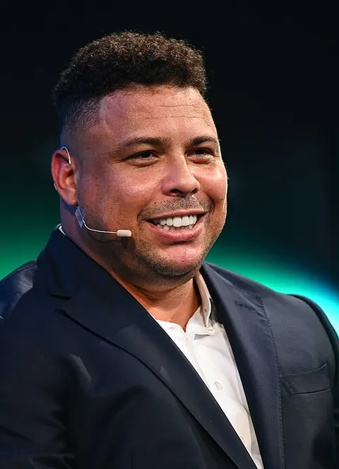
.JPG)
Ronaldo (brazil).JPG
Ronaldo Pallone d'oro 1997.jpg_(cropped).JPG)
Ronaldo (brazil) (cropped).JPG.jpg)
LulaeRonaldo (2009).jpg.jpg)
Gaviões da Fiel - Ronaldo (4385112519).jpg.jpg)
Gaviões da Fiel - Ronaldo (4385126239).jpg.jpg)
Gaviões da Fiel - Ronaldo (4385887830).jpg.jpg)
Gaviões da Fiel - Ronaldo (4385888206).jpg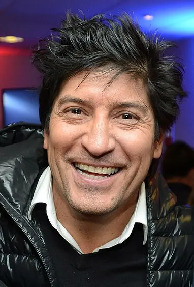
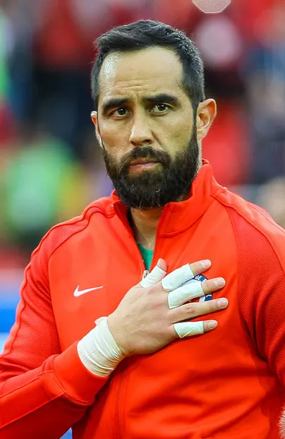

Barça - Napoli - 20140806 - Claudio Bravo 1.jpg
Spain - Chile - 10-09-2013 - Geneva - Claudio Bravo.jpg
Barça - Napoli - 20140806 - Claudio Bravo.jpg
Claudio-bravo.jpg
2017 Confederation Cup - CMRCHI - Claudio Bravo.jpg
2017 Confederations Cup - Final - Claudio Bravo wins the Golden Glove.jpg
Claudio Bravo - Spain vs. Chile, 10th September 2013.jpg
ClaudioBravoSeleccionChilena.jpg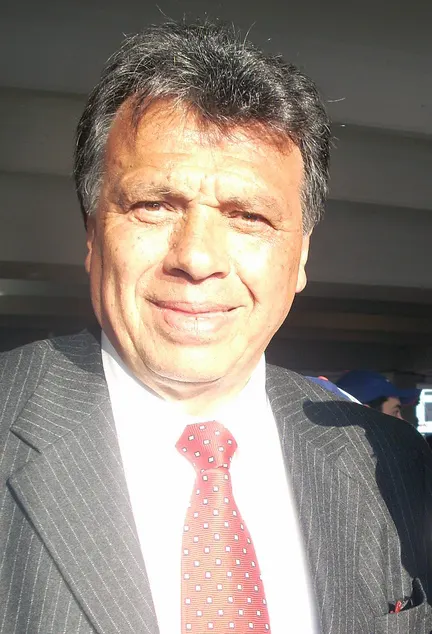

Elias figueroa joven.jpg
Figueroa premio guayaquil.jpg
Efigueroa1973.JPG.jpg)
Leonel Sánchez, Estadio, 1961-04-27 (935).jpg.jpg)
Leonel Sánchez, Estadio, 1958-10-30 (805).jpg.jpg)
Leonel Sánchez, Estadio, 1955-10-08 (647).jpg
LeonelSanchez1959.jpg_(cropped).jpg)
Leonel Sánchez (2) (cropped).jpg_(cropped_2).jpg)
Leonel Sánchez (2) (cropped 2).jpg.jpg)
Leonel Sánchez (2).jpg.jpg)
Leonel Sánchez, Estadio, 1955-08-27 (641).jpg
Bayer-Munchen traint in Olympisch Stadion, G Muller en trainer Udo Katlek, Bestanddeelnr 926-2637.jpg.jpg)
Gerd Müller & Udo Lattek (1973).jpg.jpg)
Beckenbauer, Müller, Lattek (Muller cropped).jpg
Gerd Muller 1978.JPG
Gerd muller figurita.jpg
Gerd Müller c1973.jpg.jpg)
Gerd Müller c1973 (cropped).jpg
Gerd Müller México 70.png
Kempes goal final.jpg
Mario kempes panini card 1979.jpg
Maradona kempes spain.jpg
Mario Kempes 1973 en Instituto de Córdoba.jpg
Mario Alberto Kempes en Instituto 1972.jpg
Mario Kempes goleador 1974.png.jpg)
Mario kempes figurita crack (cropped).jpg
Bertoni ardiles kempes.jpg
Paolo rossi elgrafico 1982.jpg
Spagna '82 - Paolo Rossi, Coppa del Mondo.jpg
Paolo rossi celebrando gol eg1978.jpg.jpg)
Paolo rossi elgrafico 1982 (cropped).jpg.jpg)
Paolo Rossi at the 1982 FIFA World Cup (cropped).jpg
Elgrafico 3275 paolo rossi.jpg
Paolo Rossi at the 1982 FIFA World Cup.jpg
Paolo Rossi Giuliano Vincenzi anni settanta.jpg
Diego Forlan against Colombia.jpg.jpg)
Diego Forlan against Colombia (cropped).jpg
ForlanInter2013.jpg.jpg)
Festejo de Diego Forlán - 160329-9363-jikatu (25554950004).jpg
Diego-Forlán-BarcelonaSC-2017.jpg
Carlos Valderrama 1998.jpg
Valderrama maradona saludo.jpg
Cubillas en pomalca, el lino.jpg
Teófilo Cubillas.JPG
Cubillasandeusebio1974.jpg
Teófilo Cubillas 1978.jpg
Teófilo Cubillas México 70.jpg
Teofilo cubillas panini card.jpg.jpg)
Teofilo cubillas panini card (cropped).jpg.png)
Teófilo Cubillas (cropped).png
Shearers Bar - geograph.org.uk - 954319.jpg.jpg)
Newcastle Utd v Celtic - Alan Shearer Testimonial (1).jpg.jpg)
Newcastle Utd v Celtic - Alan Shearer Testimonial (2).jpg.jpg)
Newcastle Utd v Celtic - Alan Shearer Testimonial (3).jpg.jpg)
Newcastle Utd v Celtic - Alan Shearer Testimonial (4).jpg.jpg)
Newcastle Utd v Celtic - Alan Shearer Testimonial (5).jpg.jpg)
Newcastle Utd v Celtic - Alan Shearer Testimonial (6).jpg.jpg)
Newcastle Utd v Celtic - Alan Shearer Testimonial (7).jpg
Ryan Giggs 1314.jpg
Ryan Giggs United.jpg
Ryan Giggs in 2008.jpg
Giggs cropped.jpg
Ryan giggs + federico macheda July 2009.jpg
Giggs ryan.jpg
Ryan Giggs-Autogramm.jpg
Ryan Giggs with PL trophy in 2008.jpg
Eric Cantona Cannes 2009.jpg
Petr Čech Chelsea 2013.jpg
Petr Čech, Strahov, kopající penaltu.jpg
Wiener Riesenrad Petr Cech Euro2008.jpg
Petr Čech, Strahov.jpg.jpg)
Petr Čech, Strahov (cropped).jpg_2.jpg)
Petr Čech, Strahov (cropped) 2.jpg_3.jpg)
Petr Čech, Strahov (cropped) 3.jpg
Cech - 2015 Emirates Cup.jpg
Fabregas Rodwell.jpg
Cesc playing for Chelsea.jpg
Cesc Fàbregas 2011-09-22 002.jpg
Cesc Fàbregas in 2011-10-22 002.jpg
Cesc Fàbregas in 2011-10-22 001.jpg
Fabregas sent off 2.jpg
Fabregas sent off.jpg
Cesc Fàbregas 4.jpg
Patrick Vieira.jpg.jpg)
Patrick Vieira - Inter Mailand (1).jpg.jpg)
Patrick Vieira - Inter Mailand (3).jpg.jpg)
Patrick Vieira - Inter Mailand (4).jpg.jpg)
Lech - Manchester 116 (Patrick Vieira).jpg.jpg)
Schoolgirl fundraiser Lottie and Patrick Vieira help Tackle Famine (6345059856).jpg.jpg)
Patrick Vieira - Inter Mailand (2).jpg
Man City warmup Barry Vieira Johnson DeJong.jpg
Dennis Bergkamp 1989, Bestanddeelnr 934-4782.jpg
Dennis Bergkamp.jpg
Dennis Bergkamp - FC Inter - Coppa UEFA 1993-94.jpg
Dennis Bergkamp Aug2003.JPG
Bergkamp.jpg
Paul Scholes.jpg
P Scholes.jpg
Colback Scholes.jpg
Paul Scholes 2008.jpg
1999 FA Cup Final Scholes goal celeb.jpg.jpg)
1999 FA Cup Final Scholes goal celeb (cropped).jpg
Paul Scholes vs Man City.jpg
Yaya Touré.jpg
Yaya Touré 2013-06-06 001.jpg.jpg)
Yaya Touré (cropped).jpg.jpg)
Yaya Toure protegiendo el balon (cropped).jpg
Yaya Toure 9229.JPG
Yaya Touré 2012-11-21 1.jpg
Yaya Toure ACON trophy 2015.jpg
Yaya Toure protegiendo el balon.jpg
Edwin van der Sar.jpg
Edwin van der Sar 2015.jpg
Edwin van der Sar side.jpg
Edwin van der Sar.JPG
Edwin van derSar playing for MUFC cropped.jpg
Edwin van der Sar front.jpg
Edwin van der Sar.png
Edwin van der Sar playing for MUFC.jpg
John Terry cannot into Ukraine.png
Vincent Kompany - Parade 2014.jpg.jpg)
Kompany (cropped).jpg
Vincent Kompany - Belgium.jpg
Kompany 2018.png
David Pizarro & Vincent Kompany.jpg
Vincent Kompany holds up the Premier League trophy 2012.jpg
Vincent Kompany vs USA.jpg
Kompany.jpg
Jan Vertonghen 20151129.jpg
Jan Vertonghen 14 Jul 2018.jpg
Vertonghen.JPG
Jan Vertonghen Belgium.jpg
Jan Vertonghen crop.jpg
VertonghenSLB2021.png
Shevchenko vertonghen.jpg
2017 RUS v BEL exhibition - Jan Vertonghen.jpg
Eden Hazard 2017.jpg
EdenHazardDecember 2016.jpg
Hazard v Newcastle Jan 28th 2018.jpg
Eden Hazard.jpg
Eden Hazard at Samsung.jpg.jpg)
Eden Hazard at Samsung (cropped).jpg
Eden Hazard v Roma 2013.jpg
Aurélien Chedjou - Eden Hazard.JPG.jpg)
David Silva (14701610108).jpg_(cropped).jpg)
David Silva shaved Man City 2017 (36471171422) (cropped).jpg
David Silva 2018.jpg
David Silva 2017.jpg
David Silva en el Mundial 2018.jpg
SilvaLFC.jpg
Silva England.jpg
David Silva Euro 2012 final 01.jpg_(cropped).jpg)
Mario Balotelli (15440231808) (cropped).jpg
Mario-Balotelli-Al-Ittifaq-2026.jpg.jpg)
Mario Balotelli - Inter Mailand (1).jpg.jpg)
Mario Balotelli - Inter Mailand (2).jpg_-_Balotelli_%26_Gilardino_(edited).jpg)
Mexico 1 x 2 Italy, Confederations Cup 2013 (1) - Balotelli & Gilardino (edited).jpg
Honda e Balotelli.jpg
OM13Balo.jpg.jpg)
Balotelli Inter-Milan february 2013 (cropped).jpg
Marshall Morgan Beckford.jpg
Wes Morgan.jpg.jpg)
Kasper Schmeichel & Wes Morgan (14997463076).jpg
Wes Morgan Warming up vs Leamington Spa.jpg
Wes Morgan Warming up vs Leaminton Spa CROP.jpg
Wes Morgan 2.jpg
AndyCrarolldec2014.jpg
Henderson, Carroll, Kelly, Robinson.jpg
Andy Carroll - April 2010.jpg
Andy Carroll 2.jpg
Andy Carroll 2011 Singapore.jpg
Andy Carroll 1.jpg
Andy Carroll US Tour 2012.jpg.jpg)
Andy Carroll US Tour 2012 (1).jpg
Adel Taarabt.jpg
Taarabt.JPG
Taarabt Benfica-Zenit UCL201920 8.jpg
Adel Taarabt Hull City v. Queens Park Rangers 29-01-11 1.png
Taarabt celebrates Cardiff-QPR 2011.jpg
Achille Emana vs Adel Taarabt.jpg